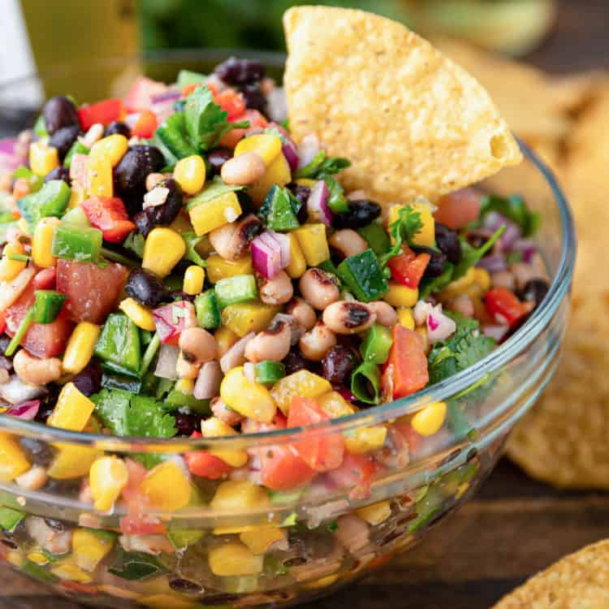

COWBOY CAVIAR

a great way to eat veggies with my bubu during hot summer months
ingredients
salad
- 3 roma tomatoes seeds removed, diced
- 1/2 red onion diced
- 15 oz black beans rinsed and drained
- 15 oz black eyed peas rinsed and drained
- 1 1/2 cups frozen sweet corn thawed
- 1 bell pepper any color, diced
- 1 jalapeno pepper seeds optional, diced
- 1/3 cup parsley finely chopped
- your favorite tortilla chips for serving
dressing
- 1/3 cup olive oil
- 1 fresh squeezed lime
- 2 tablespoons red wine vinegar
- 1/2 teaspoon salt
- 1/2 teaspoon pepper
- 1/2 teaspoon garlic powder
steps
- prepare all the salad ingredients in a large bowl
- in a separate bowl, whisk together dressing ingredients
- pour dressing into the large bowl with salad ingredients and sitr/toss very well
- keep refrigerated and stir/toss before serving with tortilla chips